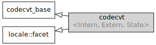

std::codecvt
From cppreference.com
| Defined in header
<locale>
|
||
| template<
class InternT, |
||
Class std::codecvt encapsulates conversion of character strings, including wide and multibyte, from one encoding to another. All file I/O operations performed through std::basic_fstream<CharT> use the std::codecvt<CharT, char, std::mbstate_t> facet of the locale imbued in the stream.


Inheritance diagram
Four specializations are provided by the standard library and are implemented by all locale objects created in a C++ program:
| Defined in header
<locale> |
|
| std::codecvt<char, char, std::mbstate_t> | identity conversion |
| std::codecvt<char16_t, char, std::mbstate_t> | conversion between UTF-16 and UTF-8 (since C++11) |
| std::codecvt<char32_t, char, std::mbstate_t> | conversion between UTF-32 and UTF-8 (since C++11) |
| std::codecvt<wchar_t, char, std::mbstate_t> | locale-specific conversion between wide string and narrow, possibly multibyte, string |
Contents |
[edit] Member types
| Member type | Definition |
intern_type
|
InternT
|
extern_type
|
ExternT
|
state_type
|
State
|
[edit] Member functions
| constructs a new codecvt facet (public member function) |
|
| destructs a codecvt facet (protected member function) |
|
invokes do_out (public member function) |
|
invokes do_in (public member function) |
|
invokes do_unshift (public member function) |
|
invokes do_encoding (public member function) |
|
invokes do_always_noconv (public member function) |
|
invokes do_length (public member function) |
|
invokes do_max_length (public member function) |
|
[edit] Member objects
| Member name | Type |
id (static)
|
std::locale::id |
[edit] Protected member functions
| [virtual]
|
converts a string from internT to externT, such as when writing to file (virtual protected member function) |
| [virtual]
|
converts a string from externT to internT, such as when reading from file (virtual protected member function) |
| [virtual]
|
generates the termination character sequence of externT characters for incomplete conversion (virtual protected member function) |
| [virtual]
|
returns the number of externT characters necessary to produce one internT character, if constant (virtual protected member function) |
| [virtual]
|
tests if the facet encodes an identity conversion for all valid argument values (virtual protected member function) |
| [virtual]
|
calculates the length of the externT string that would be consumed by conversion into given internT buffer (virtual protected member function) |
| [virtual]
|
returns the maximum number of externT characters that could be converted into a single internT character (virtual protected member function) |
Inherited from std::codecvt_base
| Member type | Definition |
| enum result { ok, partial, error, noconv }; | Unscoped enumeration type |
| Enumeration constant | Definition |
ok
|
conversion was completed with no error |
partial
|
not all source characters were converted |
error
|
encountered an invalid character |
noconv
|
no conversion required, input and output types are the same |
[edit] Example
The following examples reads a UTF-8 file using a locale which implements UTF-8 conversion in codecvt<wchar_t, char, mbstate_t>
#include <iostream> #include <fstream> #include <string> #include <locale> #include <iomanip> int main() { // UTF-8 narrow multibyte encoding std::ofstream("text.txt") << u8"z\u00df\u6c34\U0001d10b"; // or u8"zß水𝄋" // or "\x7a\xc3\x9f\xe6\xb0\xb4\xf0\x9d\x84\x8b"; std::wifstream fin("text.txt"); fin.imbue(std::locale("en_US.UTF-8")); // this locale's codecvt<wchar_t, char, mbstate_t> // converts UTF-8 to UCS4 std::cout << "The UTF-8 file contains the following wide characters: \n"; for(wchar_t c; fin >> c; ) std::cout << "U+" << std::hex << std::setw(4) << std::setfill('0') << c << '\n'; }
Output:
The UTF-8 file contains the following wide characters: U+007a U+00df U+6c34 U+1d10b
[edit] See also
| Character conversions |
narrow multibyte (char) |
UTF-8 (char) |
UTF-16 (char16_t) |
|---|---|---|---|
| UTF-16 | mbrtoc16 / c16rtomb |
codecvt<char16_t, char, mbstate_t> codecvt_utf8_utf16<char16_t> codecvt_utf8_utf16<char32_t> codecvt_utf8_utf16<wchar_t> |
N/A |
| UCS2 | No | codecvt_utf8<char16_t> | codecvt_utf16<char16_t> |
| UTF-32/UCS4 (char32_t) |
mbrtoc32 / c32rtomb |
codecvt<char32_t, char, mbstate_t> codecvt_utf8<char32_t> |
codecvt_utf16<char32_t> |
| UCS2/UCS4 (wchar_t) |
No | codecvt_utf8<wchar_t> | codecvt_utf16<wchar_t> |
| wide (wchar_t) |
codecvt<wchar_t, char, mbstate_t> mbsrtowcs / wcsrtombs |
No | No |
| defines character conversion errors (class template) |
|
| creates a codecvt facet for the named locale (class template) |
|
| (C++11)
|
converts between UTF-8 and UCS2/UCS4 (class template) |
| (C++11)
|
converts between UTF-16 and UCS2/UCS4 (class template) |
| (C++11)
|
converts between UTF-8 and UTF-16 (class template) |